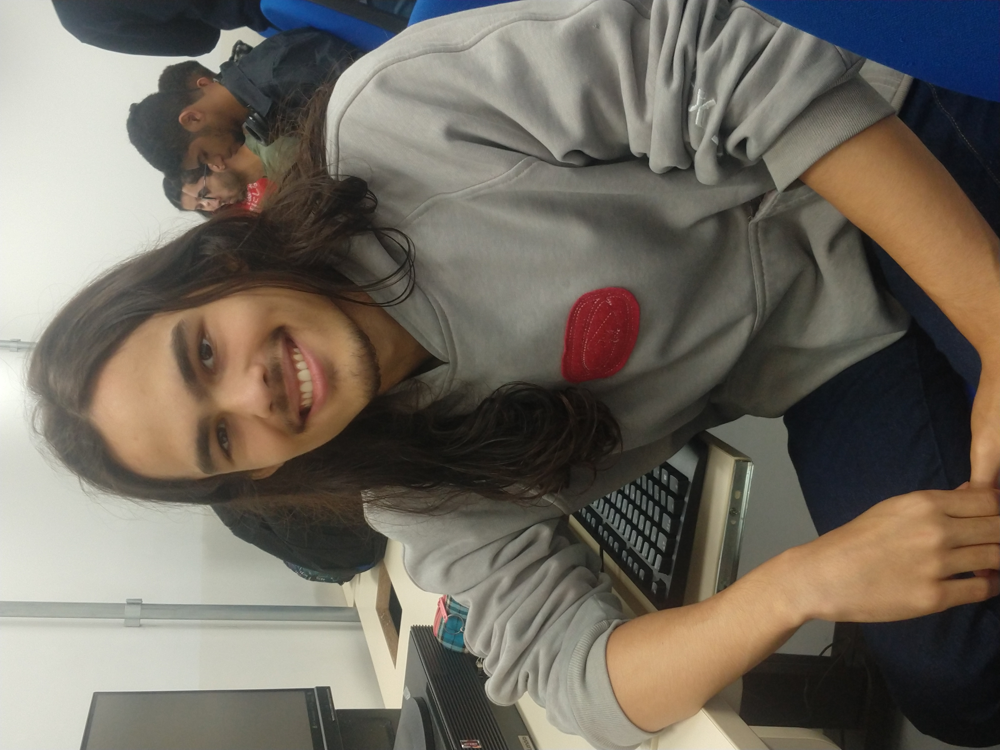
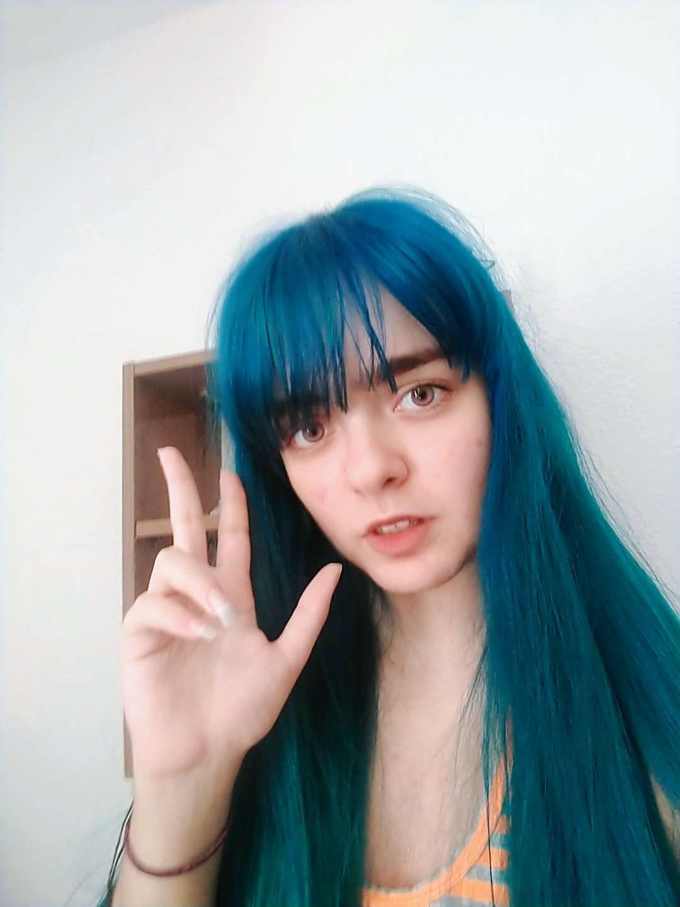
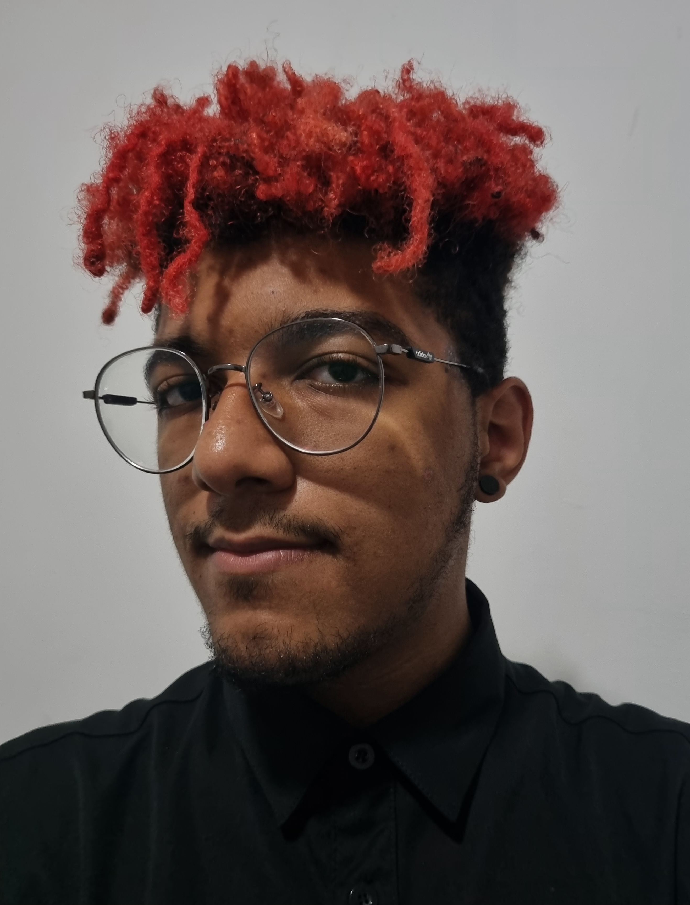
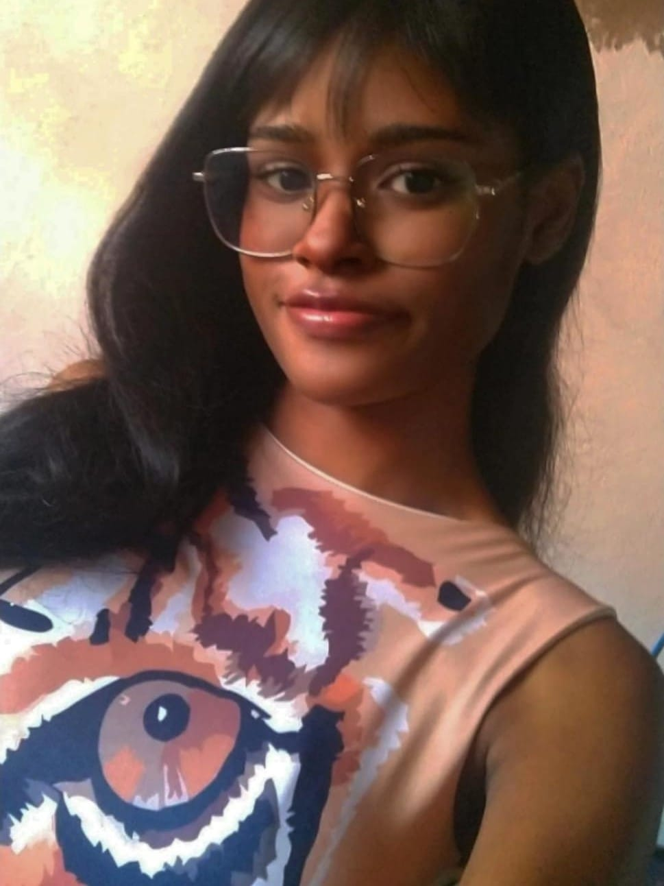

Michelle Baraçal

Meu nome é Michelle Baraçal, nasci em Santos, fiz Engenharia Civil, cursos de Autocad 2D e 3D trabalhei na área como desenhista em Autocad, tenho um cachorro chamado Gael, e amo animais. No curso de engenharia eu tive uma matéria de algoritimo e programamos em C++ durante dois semestres, e gostei muito da matéria, que me dispertou o interesse na área. No ano de 2021 percebi que queria mudar de área, e comecei a procurar faculdades de T.I, e de acordo com as pesquisas que fiz a Fatec de Santos tinha um excelente curso. Iniciei no curso de SI na Fatec de Santos em agosto de 2021, onde estou gostando bastante.
Para contatá-la entre nas redes sociais: Instagram | Facebook
João Pedro Silva de Lima
Meu nome é João Pedro, sou um aluno novo na Fatec Baixada Santista que cursa Sistemas para Internet. Comecei o curso com a ambição de mudar de vida financeiramente. Escolhi o curso de S.I porque tenho interesse na área e vejo um potêncial enorme no ramo. Tenho 19 anos e sempre gostei de aprender sobre tudo e mais um pouco. Não tenho experiência prévia com programação, mas me esforço para aprender tudo que for necessarío para se tornar um profissional no futuro.
Para contatá-lo entre nas redes sociais: Instagram | Discord
Crystal Leonhardt
Meu nome é Crystal Leonhardt, estou cursando Sistemas para Internet na Fatec Baixada Santista. Tenho 21 anos e tenho uma paixão muito forte pela tecnologia, motivo pelo qual estou neste curso. Gosto de toda cultura geek como animes, jogos e RPGs, além de já ter feito cosplay, e sonho em ser um streamer na Twitch um dia. Já cursei Criação de Games além de outros cursos Fullstack, então já tenho uma base sobre programação, mas pretendo aprender mais a fundo com Sistemas para Internet.
Para contatá-lo entre nas redes sociais: Facebook | Reddit | Discord
Matheus Gabriel
Meu nome é Matheus Gabriel, tenho 20 anos e atualmente estudo Sistemas para Internet na Fatec de Santos. Terminei o ensino médio em 2020 e acabei perdendo a oportunidade de entrar para ETEC, mas nesse meio tempo, acabei por mudar minha área de interesse, ao qual eu gostaria de começar por Jogos Digitais e acabei indo para uma área mais técnica como a de S.I. Isso foi graças a um amigo que também estudou na Fatec e me recomendou o mesmo curso que ele tinha feito, não só me trouxe mais interesse, como também iria me preparar muito mais para o meu principal objetivo de atuar na área de criação de jogos e talvez garantir um emprego fixo e remoto enquanto eu desenvolvo meus projetos autonomamente.
Para contatá-lo entre nas redes sociais: Instagram
Maria Fernanda Pereira Caetano
Meu nome é Maria Fernanda. Tenho 21 anos, e estudo programação desde os 14. Fiz Técnico em Desenvolvimento de Sistemas na ETEC e faço Tecnólogo em Sistemas para Internet na FATEC. O meu foco principal é trabalhar com backend e sou viciada em Java e aprender sobre API. O meu hobbie principal é ouvir música e prestar atenção em todas as contagens de 4 notas do meu produtor favorito Pharrell Williams.
Para contatá-la entre nas redes sociais: Github
Gael Baraçal Russo

Meu nome é Gael e sou um filhote de shitzu, nasci no dia 28 de setembro de 2020, sou da cor branco com chocolate, gosto muito de brincar com o meu macaco de pelucia e adoro comer cenoura, tomate, alface e tudo que é natural.